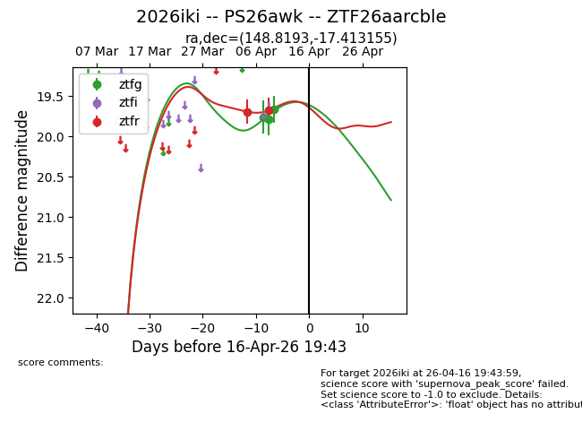
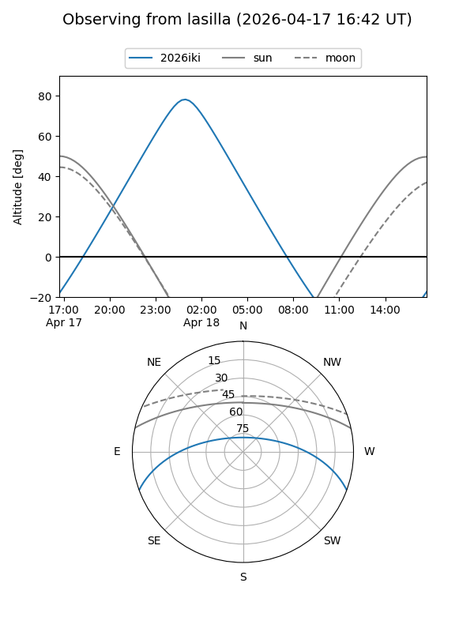
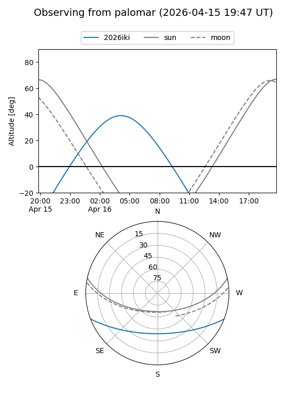
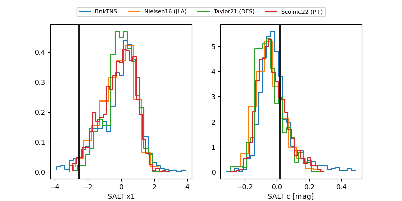

2026iki
Target 2026iki at 2026-04-16 19:52
Aliases and brokers:
FINK: link
Lasair: link
ALeRCE: link
TNS: link
YSE: link
alt names
ZTF26aarcble (ztf,fink_ztf)
2026iki (tns,yse)
PS26awk (panstarrs)
Coordinates:
equatorial (ra, dec) = 148.8193,-17.41316
equatorial (HMS+DMS) = 09:55:16.62,-17:24:47.36
galactic (l, b) = (254.0546,+28.29377)
Flags:
Photometry:
last ztfg=19.66, ztfr=19.68
3 ztfg, 2 ztfr detections
Lightcurve

Visibility


Additional plots
